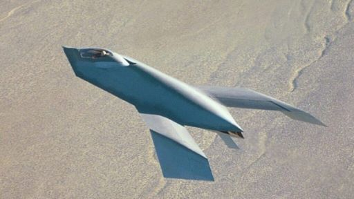

Flight records
The YF-118 g first flew on September 11, 1996, at Groom Lake. Its initial set of flights face some issues. It had created a lot of drag and faced stability issues due to its design. The yf-23 on the other hand was unveiled to the public to compete the yf-23. There are two prototypes, the original being the Black Widow II and the other being the Grey Ghost.

| yf-118g | The bird of prey took to the skies on September 11, 1996 over Groom Lake (Area 51) with Air Force Colonel Doug Benjamin. When he brought the aircraft back on the ground he noted that the drag when the gear is extended was 3 times worse then he expected. Over the next three years, stability issues were being worked out over the next 37 flights. |
| yf-23 | The first YF-23 took the skies on September 18, 1990, supercruised at Mach 1.43 with Pratt & Whitney engines. The second was with General electric engines and reached 1.72 on November 29 1990. Both aircraft flew 50 times for a total of 65.2 hours. Results of the flights show that it exceeded all performance requirements. the YF-23 was stealthier and faster, but the YF-22 was more agile. |